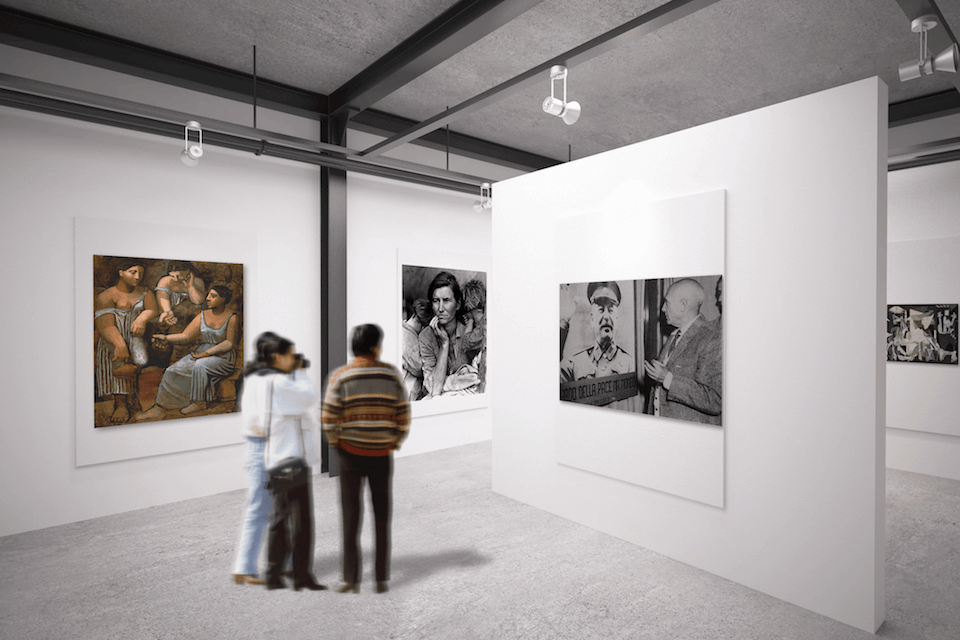
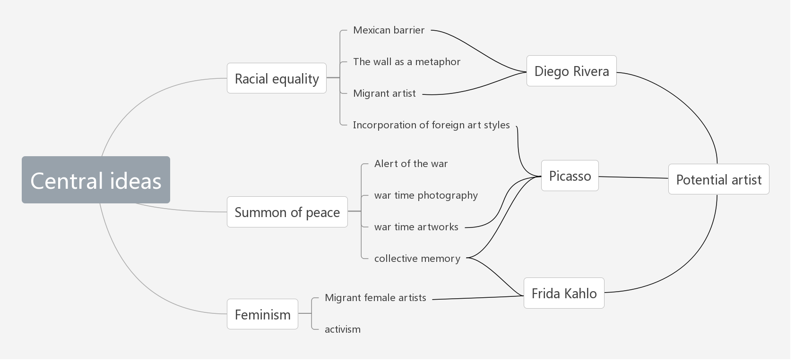
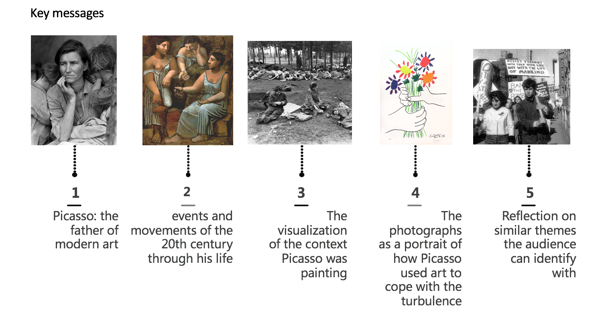
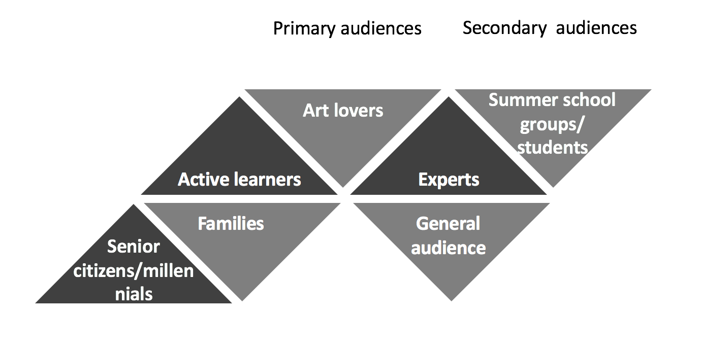
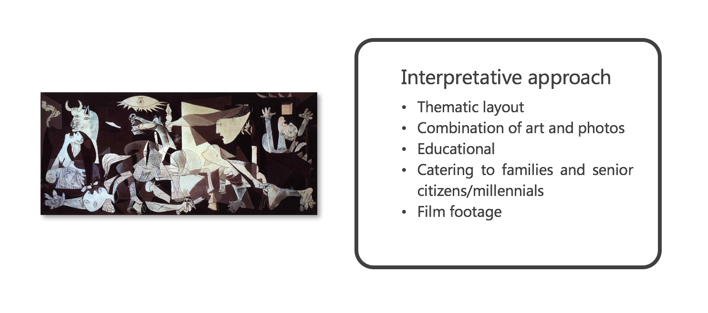

Contextualizing Picasso
An exhibition proposal that looks at love and despair through the works of Picasso and the lens of photographers

The challenge
How do curators “display object to stop the viewers in his tracks, to convey an arresting sense of uniqueness, to evoke an exalted attention”? In the exhibition methods class at UC Davis, I was given this prompt to design an exhibition to convey an idea and worked with 2 students from various backgrounds to propose the exhibition.
When we initiated this project, the Mexico–United States barrier turned out more than a joke, Brexit became a buzzword and debate on refugee problem was heated. The world seemed more turbulent than any time in this long period of peace. We would like to convey ideas against this situation.
Brainstorming
We arranged rounds of quick brainstorming. With the help from a mind map, we explored several potential ideas.

Whenever we formed a rough idea, we presented it to our professor to discuss the possibilities and evaluate its feasibility. With the following chart, we measured 3 ideas: Female artists in a foreign country, Picasso’ works on wars, Hispanic American Artist.
Finally, we landed on Picasso’s works depicting wars and peace as the exhibition topic. We believed that Picasso should appeal to a wide range of people and that it would help people reflect upon the current issues such as rising racism, reviving fascism and so on. To clearly express our intention and add highlights to a yet another Picasso exhibition, we decided to back up Picasso’s artistic expression of war with contemporary photos depicting the same historical event.
The professor gave us great freedom in terms of the budget and location so that we could work out something that fully expresses our ideas and concerns.
Substantiating the idea
The first task in designing an exhibition was to build its narrative and decide what objects are to be used. We hunted for Picasso’s works regarding war and peace following a his life timeline. The narrative is straightforward and clear: Picasso’s interpretation of 20th century’s important events would be displayed in chronological order side by side with photos illustrating the same event.
We searched the Internet to construct our object list. Carefully avoiding works without clear attribution and copy right, we collected works to be exhibited from Artstor, Google Arts and Culture, and so on. We picked those most famous works as well as thought-provoking ones, and organized them into a narrative flow.

Specifically, the opening image was an ironic and amusing one: a photo of Picasso looking at an image of Stalin. it was both intriguing and able to bring out our theme.

Designing for better engagement
I was in charge of defining our audience of the exhibition and methods. The meticulous design details of the exhibition reminded me of how human-centered design could contribute to the communication of ideas.

I rummaged museums’ official websites including SFMOMA.org, Ashmolean.org, and so on to trace meticulous and valid design in their learning handbooks and visitor manual. I took field trips to two museums on campus and three more in San Francisco including de Young museum, SFMOMA, and Exploratorium. I wandered in the museums with a sketchbook, observing museum goers, writing down random thoughts and details I noticed that might be helpful for better interaction and engagement. Design elements that enhanced communication silently and interactive installments showing the arousing power of technology In terms of conveying ideas and creating impulses, these human centered designs were effective yet not enforcing.

Finally, we decided to place our exhibition at SFMOMA and LACMA.
{kind=link}
{kind=link}
The outcome
The exhibition proposal was presented to our professor and classmates, and was regarded as conniving and strong.
However, our design are all based on secondary research, if would be better if we can directly interact with our potential users by surveys or interviews to know better about their thoughts.